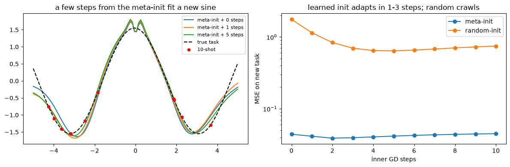
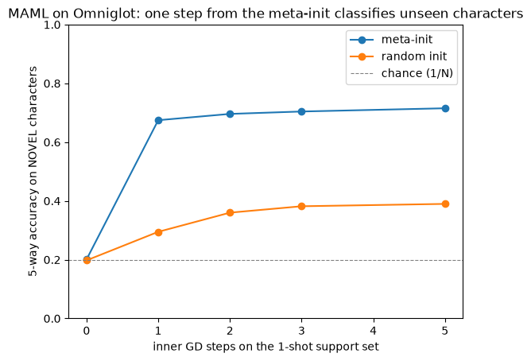
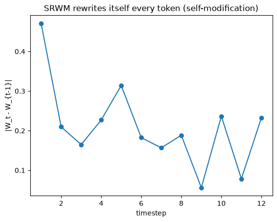

The question: if a write is a learning step, can a network learn a good place to start those steps — or run them on itself?
Fifth module of the foundations spine. Runs on CPU in a couple of minutes; PyTorch throughout, plus a one-time ~10 MB Omniglot download (cached locally).
M4 gave the memory a built-in learning rule — the delta write is one SGD step per token (M4 §3). That opens two questions, and M5 answers both:
If a write is a learning step, can a network learn a good starting point so a few such steps adapt it to a brand-new task? → meta-learning / MAML.
The wild one: what if the matrix runs its delta rule on its own weights — generating the very keys, values and learning rates that modify itself? → the self-referential weight matrix (SRWM).
Self-reference is the deepest root of Nested Learning’s “levels”: a single object that is at once program and data, optimizer and optimizee.
Prerequisite math — higher-order gradients (create_graph=True; differentiating through a gradient step, which is the move that makes MAML’s meta-gradient second-order) are built from scratch, with runnable demos, in the backpropagation primer §6, §8.
Objective
After this module you should be able to:
State meta-learning as a bilevel problem: an inner loop that adapts to a task and an outer loop that learns across tasks — two timescales, the same nesting as M2’s slow/fast split.
Write MAML: inner \(\theta'_i=\theta-\alpha\nabla_\theta\mathcal{L}_{T_i}(\theta)\), outer \(\min_\theta\sum_i\mathcal{L}_{T_i}(\theta'_i)\) — learn an initialization from which a few gradient steps generalize.
See why the meta-gradient is second-order (it differentiates through the inner gradient step) and what the first-order approximation drops.
Write the SRWM update \(W_t=W_{t-1}+\sigma(\beta_t)(\mathbf{v}_t-\bar{\mathbf{v}}_t)\otimes\varphi(\mathbf{k}_t)\) and explain how it collapses the programmer/program split: the same \(W\) produces its own \(\mathbf{k},\mathbf{q},\beta\) and reads its own \(\bar{\mathbf{v}},\mathbf{v}\).
Recognize SRWM as a strict generalization of M4’s DeltaNet (untie the projections → recover the delta rule), and locate both on the road to HOPE’s self-modifying block.
Why it exists (the limitation it opens up)
M4’s delta rule quietly changed what a “memory” is: each write is a gradient-descent step on a per-key regression loss. So the forward pass already runs an inner optimization. Two things were left implicit.
The starting point is arbitrary. The memory begins at \(\mathcal{M}_0=0\) and the slow weights begin random. If a write is a learning step, then where you start determines how many steps adaptation needs. Nothing so far learns a good initialization for fast adaptation. That’s the gap MAML fills.
The programmer is frozen. In M2–M4 a slow net (fixed within the forward pass) writes a fast memory. The slow net never adapts on the fly; the hierarchy programmer→program is rigid. What if the fast matrix could rewrite its own update rule? That’s the gap SRWM fills.
Both are the same move — make the learning process itself learnable — applied at two depths: learn the initial weights (MAML), or learn a matrix that modifies itself (SRWM). Neither depth is new: “learning to learn” goes back to Schmidhuber’s 1987 diploma thesis, and both papers below name it as their ancestor. What M4 changed is that you no longer have to posit an inner learner — the write already was one. This “learning to learn” is exactly the nesting that Nested Learning elevates to a first-class principle.
Core idea — learning to learn, at two depths
Meta-learning = two nested loops. Sample a task \(T_i\); the inner loop adapts parameters to it; the outer loop updates whatever the inner loop started from, so that adaptation works well on average over tasks:
\[\underbrace{\theta'_i=\theta-\alpha\nabla_\theta\mathcal{L}^{\text{support}}_{T_i}(\theta)}_{\text{inner: adapt to the task}}\qquad \underbrace{\min_\theta\ \textstyle\sum_i \mathcal{L}^{\text{query}}_{T_i}(\theta'_i)}_{\text{outer: learn the init across tasks}}\]
This is MAML (Finn, Abbeel & Levine, 2017): \(\theta\) is not a solution to any task — it is a launchpad from which one or a few gradient steps reach a good task-specific \(\theta'_i\). The outer update \(\theta\leftarrow\theta-\eta\nabla_\theta\sum_i\mathcal{L}_{T_i}(\theta'_i)\) differentiates through the inner step, so it carries a second-order (Hessian) term — the “gradient through a gradient.”
What MAML repaired is worth naming, because it is a subtraction. The meta-learners before it learned the update rule itself — a second network, with its own parameters, emitting the step. MAML keeps ordinary gradient descent and learns only where it starts, so it “does not expand the number of learned parameters nor place constraints on the model architecture” (§1). That is the whole of its model-agnosticism: the inner loop is already there in anything trained by gradient descent, and MAML only aims it.
Self-reference = collapse the loops into one matrix. M4’s delta rule had a separate slow net invent \(\mathbf{k},\mathbf{v},\mathbf{q},\beta\). The SRWM (Irie, Schlag, Csordás & Schmidhuber, 2022) lets one matrix \(W\) do everything: it processes the input to emit its own modifier-key \(\mathbf{k}_t\), analyzer-query \(\mathbf{q}_t\), and learning rate \(\beta_t\), queries itself for the current and target values, then delta-updates itself:
The programmer is the program. Set the producing-projections to a separate, fixed matrix and you are back at M4’s DeltaNet; tie them to \(W\) and the matrix learns to modify itself.
The design is a rebuild, not a debut. The paper “revisit[s] the self-referential WM … from the ’90s in the light of modern techniques” (§1) — Schmidhuber’s 1992–93 self-referential matrix, which addressed its own weights one at a time through a binary index. What the modern version swaps in is machinery you already have: the outer products and the delta rule of M4. The idea waited thirty years for its write rule.
The other route to learning-to-learn (adapt activations, not weights): RL² (Duan et al., 2016) and L2RL (Wang et al., 2016) — meta-learning that lives in an RNN’s hidden state (in-context), no inner gradient. The two were posted eight days apart in November 2016 by different groups, which is the honest way to read them: one idea whose time had come, not one paper answering the other. §4 puts the two routes side by side.
1. The bilevel loop and why the meta-gradient is second-order
The one subtlety that makes MAML MAML (and not just pretraining): the outer loss is a function of \(\theta'_i\), which is itself a function of \(\theta\)through a gradient. So \(\nabla_\theta\mathcal{L}(\theta'_i)\) must differentiate through \(\nabla_\theta\mathcal{L}^{\text{support}}(\theta)\) — a Hessian term. A minimal scalar task makes it concrete: task = “move \(\theta\) toward \(c\),” loss \((\theta-c)^2\). The full meta-gradient keeps the \(\tfrac{\partial\theta'}{\partial\theta}=1-2\alpha\) factor; the first-order approximation pretends that factor is 1.
import torchimport torch.nn.functional as Fimport matplotlib.pyplot as pltimport mathtorch.manual_seed(0)theta = torch.tensor(1.5, requires_grad=True)c_support, c_query =2.0, 2.0# task: pull theta toward c (support adapts, query scores)alpha =0.3# inner step, keeping the graph so we can backprop THROUGH itinner_loss = (theta - c_support)**2g_inner = torch.autograd.grad(inner_loss, theta, create_graph=True)[0]theta_prime = theta - alpha * g_innermeta_loss = (theta_prime - c_query)**2g_full = torch.autograd.grad(meta_loss, theta)[0].item() # second-order (through g_inner)# first-order: treat theta' as if it didn't depend on theta via the inner gradienttp_fo = (theta - alpha*torch.autograd.grad((theta-c_support)**2, theta)[0]).detach().requires_grad_(True)g_fo = torch.autograd.grad((tp_fo - c_query)**2, tp_fo)[0].item()print(f"theta' = {theta_prime.item():.3f} (one inner step from theta=1.5)")print(f"meta-grad second-order = {g_full:.3f} (keeps d theta'/d theta = 1 - 2*alpha = {1-2*alpha:.1f})")print(f"meta-grad first-order = {g_fo:.3f} (pretends d theta'/d theta = 1)")print("the gap IS the Hessian term: the outer loop differentiates through the inner gradient step.")
theta' = 1.800 (one inner step from theta=1.5)
meta-grad second-order = -0.160 (keeps d theta'/d theta = 1 - 2*alpha = 0.4)
meta-grad first-order = -0.400 (pretends d theta'/d theta = 1)
the gap IS the Hessian term: the outer loop differentiates through the inner gradient step.
NoteQ: Why did the inner loop use torch.autograd.grad(...) instead of loss.backward()?
Because MAML’s inner step needs the gradient as a value it can compute with and keep differentiable — and .backward() gives neither. The two APIs do different jobs:
accumulates into each leaf’s .grad (a side-effect)
no side-effect; pure function
graph
grads stored as plain .grad slots
returned grads carry a grad_fn → differentiable again
The inner loop is θ' = θ - α·g. That needs three things, all of which point to autograd.grad:
A returned value. We must use the gradient in an expression to build θ'. autograd.grad hands it back; .backward() returns None and you’d have to fish it out of θ.grad.
Second-order differentiability. The outer loss is evaluated at θ', and we backprop through it all the way to θ — which means differentiating through g itself (the Hessian term this section is about). create_graph=True makes the returned g part of the graph, so that works.
Functional, no global state. MAML builds a chain of new parameter tensors θ → θ' → θ'' … that must stay graph-connected. autograd.grad composes cleanly; .backward() is built around mutating a fixed set of leaves in place (and accumulates, so you’d also have to zero .grad between inner steps). Wrong tool for a functional update.
But notice the notebook uses both — each where it fits. §2’s meta-training cell shows the pair:
grads = torch.autograd.grad(loss, p, create_graph=True) # INNER: grad as a differentiable valuep = [pi - alpha*gi for pi, gi inzip(p, grads)] # build theta'...(ml /4).backward(); opt.step() # OUTER: accumulate into meta-params' .grad,# then let Adam update them in place
The outer loop is an ordinary training step on the leaf meta-parameters, so .backward() + optimizer.step() is exactly right there. The inner loop is a functional, higher-order computation, so autograd.grad is the right tool. (You can force MAML through .backward(create_graph=True) by reading θ.grad, but you’d be managing accumulation and zeroing by hand — which is why autograd.grad is what higher / learn2learn / torch.func use under the hood.)
2. MAML: a learned initialization that adapts in a few steps
Now the real thing, on the canonical task: sine regression. Each task is \(f(x)=A\sin(x+\varphi)\) with random amplitude \(A\) and phase \(\varphi\); the model sees \(K=10\) points and must fit the whole curve. We meta-train an MLP’s initial weights so that one inner gradient step on the 10 support points generalizes. Then we test on a new sine: from the meta-init a few steps snap to the curve, while the same architecture from a random init barely moves.
(This is exactly MAML’s Figs. 2–3: rapid adaptation within 1–10 gradient steps vs. a baseline init fine-tuned on the same task distribution.)
# --- a small functional MLP so we can take gradients w.r.t. params and step them manually ---def init_params(sizes=(1, 40, 40, 1)): g = torch.Generator().manual_seed(0) ps = []for a, b inzip(sizes[:-1], sizes[1:]): w = (torch.randn(b, a, generator=g) * math.sqrt(2/ a)).requires_grad_(True) ps += [w, torch.zeros(b, requires_grad=True)]return psdef fwd(params, x): h, n = x, len(params) //2for i inrange(n): h = h @ params[2* i].t() + params[2* i +1]if i < n -1: h = torch.tanh(h)return hdef adapt(params, x, y, alpha=0.01, steps=1, create_graph=True): p = paramsfor _ inrange(steps): loss = F.mse_loss(fwd(p, x), y) grads = torch.autograd.grad(loss, p, create_graph=create_graph) p = [pi - alpha * gi for pi, gi inzip(p, grads)]return pdef sample_task(g): A = torch.rand(1, generator=g) *4.9+0.1 phase = torch.rand(1, generator=g) * math.pireturnlambda x: A * torch.sin(x + phase)def shots(f, K, g): x = torch.rand(K, 1, generator=g) *10-5return x, f(x)# --- meta-train: learn theta so 1 inner step fits a task (second-order MAML) ---meta = init_params()opt = torch.optim.Adam(meta, lr=1e-3)g = torch.Generator().manual_seed(1)for it inrange(3000): opt.zero_grad() ml =0.0for _ inrange(4): # meta-batch of 4 tasks f = sample_task(g) xs, ys = shots(f, 10, g) # support (adapt) xq, yq = shots(f, 10, g) # query (score) fast = adapt(meta, xs, ys, alpha=0.01, steps=1, create_graph=True) ml = ml + F.mse_loss(fwd(fast, xq), yq) (ml /4).backward() opt.step()print(f"meta-training done. final meta-loss = {(ml /4).item():.3f}")
meta-training done. final meta-loss = 1.237
# --- evaluate on a NEW task: meta-init vs random-init, as inner steps accumulate ---gt = torch.Generator().manual_seed(123)f = sample_task(gt)xs, ys = shots(f, 10, gt)xx = torch.linspace(-5, 5, 100).reshape(-1, 1)yy = f(xx)def eval_after(base, steps): p = [pi.detach().clone().requires_grad_(True) for pi in base] p = adapt(p, xs, ys, alpha=0.01, steps=steps, create_graph=False)return pfig, (axL, axR) = plt.subplots(1, 2, figsize=(12, 4))for steps in (0, 1, 5): axL.plot(xx, fwd(eval_after(meta, steps), xx).detach(), label=f"meta-init + {steps} steps")axL.plot(xx, yy, 'k--', label="true task"); axL.scatter(xs, ys, c='r', zorder=5, s=20, label="10-shot")axL.set_title("a few steps from the meta-init fit a new sine"); axL.legend(fontsize=8)rand = init_params_rand = [ (torch.randn_like(p)*0.3).requires_grad_(True) for p in meta ]for name, base in [("meta-init", meta), ("random-init", rand)]: errs = [F.mse_loss(fwd(eval_after(base, s), xx), yy).item() for s inrange(0, 11)] axR.plot(range(0, 11), errs, marker='o', label=name)axR.set_yscale('log'); axR.set_xlabel("inner GD steps"); axR.set_ylabel("MSE on new task")axR.set_title("learned init adapts in 1-3 steps; random crawls"); axR.legend()plt.tight_layout(); plt.show()print("MAML learns WHERE to start so that gradient descent is fast -- a launchpad, not a solution.")

MAML learns WHERE to start so that gradient descent is fast -- a launchpad, not a solution.
MAML for real — few-shot image classification (Omniglot)
The sine task isolates the mechanics; real meta-learning is few-shot classification — given a handful of labelled examples of novel classes, classify new instances of them. MAML’s home benchmark is Omniglot (Lake et al., 2011 — the reference MAML itself cites): 1623 handwritten characters from 50 alphabets, 20 examples each (“the MNIST of meta-learning”).
The protocol is episodic, \(N\)-way \(K\)-shot. Each episode samples \(N\) new character classes, gives \(K\) labelled support examples per class, and asks the model to classify \(Q\)query examples. Meta-train and meta-test use disjoint characters, so at test time the model faces glyphs it has never seen. The inner loop adapts to the episode’s \(N\) classes; the outer loop learns an initialization from which that adaptation works on any set of characters — exactly the bilevel structure of §1–§2, now on real images.
We run 5-way 1-shot: 5 novel characters, one labelled example each. The payoff to watch:
from the meta-init, a single gradient step on those 5 examples classifies fresh samples of the same 5 characters;
before adaptation the meta-init is at chance — it memorized no classes, it only learned a good launchpad;
the same architecture from a random init can’t catch up in a few steps.
(We reuse a small MLP for speed; the standard conv backbone reaches ~99% with the same algorithm — better features, identical mechanism. One-time ~10 MB Omniglot download, cached locally.)
import os, urllib.request, zipfileimport numpy as npimport matplotlib.image as mpimgdef prepare_omniglot():"""Download Omniglot once, cache as a 28x28 uint8 array. No torchvision needed.""" root = os.path.expanduser("~/.cache/cl-course-data") os.makedirs(root, exist_ok=True) npy = os.path.join(root, "omniglot_bg_28.npy")ifnot os.path.exists(npy): zp = os.path.join(root, "images_background.zip")ifnot os.path.exists(zp):print("downloading Omniglot (~10 MB, one time)...") urllib.request.urlretrieve("https://raw.githubusercontent.com/brendenlake/omniglot/master/python/images_background.zip", zp )with zipfile.ZipFile(zp) as z: z.extractall(root) base = os.path.join(root, "images_background") idx = np.linspace(0, 104, 28).astype(int) chars = []for alpha insorted(os.listdir(base)): ap = os.path.join(base, alpha)ifnot os.path.isdir(ap):continuefor ch insorted(os.listdir(ap)): cp = os.path.join(ap, ch)ifnot os.path.isdir(cp):continue ims = [ (1.0- mpimg.imread(os.path.join(cp, f)))[idx][:, idx] # invert (ink=1) + downsamplefor f insorted(os.listdir(cp))if f.endswith(".png") ]iflen(ims) ==20: chars.append(np.stack(ims)) np.save(npy, (np.stack(chars) *255).astype(np.uint8))return np.load(npy).astype("float32") /255.0# [964 classes, 20 imgs, 28, 28], ink=1data = torch.from_numpy(prepare_omniglot()).reshape(964, 20, 784)perm = torch.randperm(964, generator=torch.Generator().manual_seed(0))Xtr, Xte = data[perm[:800]], data[perm[800:]] # DISJOINT meta-train / meta-test charactersprint("Omniglot:", tuple(data.shape), "-> 800 meta-train classes, 164 NOVEL meta-test classes")def episode(pool, N, K, Q, gen): # one N-way K-shot episode cls = torch.randperm(pool.shape[0], generator=gen)[:N] xs, ys, xq, yq = [], [], [], []for i, c inenumerate(cls): o = torch.randperm(20, generator=gen) xs.append(pool[c, o[:K]]) ys += [i] * K # support xq.append(pool[c, o[K : K + Q]]) yq += [i] * Q # queryreturn torch.cat(xs), torch.tensor(ys), torch.cat(xq), torch.tensor(yq)# show a 5-way 1-shot support set: 5 novel characters, ONE labelled example eachxs, ys, xq, yq = episode(Xte, 5, 1, 5, torch.Generator().manual_seed(3))fig, ax = plt.subplots(1, 5, figsize=(7, 1.8))for i inrange(5): ax[i].imshow(xs[i].reshape(28, 28), cmap="gray_r") ax[i].axis("off") ax[i].set_title(f"class {i}", fontsize=8)fig.suptitle("a 5-way 1-shot episode — one labelled example per NOVEL character", y=1.12, fontsize=9)plt.show()print("task: classify fresh handwritten samples of these 5 characters -- none seen during meta-training.")
task: classify fresh handwritten samples of these 5 characters -- none seen during meta-training.
# classification MLP + a cross-entropy inner loop (same MAML as section 2, now N-way classification)def mlp(p, x): h, n = x, len(p) //2for i inrange(n): h = h @ p[2* i].t() + p[2* i +1]if i < n -1: h = F.relu(h)return hdef adapt_ce(p, x, y, alpha, steps, create_graph):for _ inrange(steps): grads = torch.autograd.grad( F.cross_entropy(mlp(p, x), y), p, create_graph=create_graph ) p = [pi - alpha * gi for pi, gi inzip(p, grads)]return pdef init_cls(N, seed=0, sizes=(784, 128, 128)): g = torch.Generator().manual_seed(seed) ps = [] dims =list(sizes) + [N]for a, b inzip(dims[:-1], dims[1:]): ps += [ (torch.randn(b, a, generator=g) * math.sqrt(2/ a)).requires_grad_(True), torch.zeros(b, requires_grad=True), ]return psN, K, Q =5, 1, 5meta = init_cls(N)opt = torch.optim.Adam(meta, lr=2e-3)gen = torch.Generator().manual_seed(1)for it inrange(600): # second-order MAML, ~7 s opt.zero_grad() ml =0.0for _ inrange(8): # meta-batch of 8 episodes xs, ys, xq, yq = episode(Xtr, N, K, Q, gen) fast = adapt_ce(meta, xs, ys, alpha=0.4, steps=1, create_graph=True) ml = ml + F.cross_entropy(mlp(fast, xq), yq) (ml /8).backward() opt.step()def meta_test_acc(base, steps): # accuracy on NOVEL (held-out) characters gt = torch.Generator().manual_seed(7) tot =0.0for _ inrange(200): xs, ys, xq, yq = episode(Xte, N, K, Q, gt) p = [pi.detach().clone().requires_grad_(True) for pi in base] p = adapt_ce(p, xs, ys, alpha=0.4, steps=steps, create_graph=False) tot += (mlp(p, xq).argmax(1) == yq).float().mean().item()return tot /200rand = [(torch.randn_like(p) *0.1).requires_grad_(True) for p in meta]axis = [0, 1, 2, 3, 5]plt.plot(axis, [meta_test_acc(meta, s) for s in axis], marker="o", label="meta-init")plt.plot(axis, [meta_test_acc(rand, s) for s in axis], marker="o", label="random init")plt.axhline(1/ N, ls="--", c="gray", lw=0.8, label="chance (1/N)")plt.xlabel("inner GD steps on the 1-shot support set")plt.ylabel("5-way accuracy on NOVEL characters")plt.title("MAML on Omniglot: one step from the meta-init classifies unseen characters")plt.legend()plt.ylim(0, 1)plt.show()print(f"5-way 1-shot, NOVEL classes: meta-init {meta_test_acc(meta, 0):.0%} before adapting (= chance {1/ N:.0%}),"f" {meta_test_acc(meta, 1):.0%} after ONE step.")print(f"random init reaches only {meta_test_acc(rand, 3):.0%} after 3 steps. The init is the whole story.")print("MLP backbone caps ~70%; a conv net reaches ~99% with the SAME algorithm -- better features, identical mechanism.")

5-way 1-shot, NOVEL classes: meta-init 20% before adapting (= chance 20%), 67% after ONE step.
random init reaches only 38% after 3 steps. The init is the whole story.
MLP backbone caps ~70%; a conv net reaches ~99% with the SAME algorithm -- better features, identical mechanism.
3. Self-reference: a matrix that modifies itself
MAML still keeps a clean split — meta-parameters (the init) are learned offline, task parameters online. The SRWM dissolves the split entirely. One matrix \(W\) plays every role: it reads the input, emits its own control signals, and rewrites itself with the delta rule. The boxed update again, in code terms — \(W_{t-1}\) maps \(\varphi(\cdot)\in\mathbb{R}^{d}\) to the stacked output \([\mathbf{y},\mathbf{k},\mathbf{q},\beta]\), then:
This is M4’s delta write with one change: the projections that produce \(\mathbf{k},\mathbf{q},\beta\) and the values are \(W\) itself, not a separate frozen net. The cell runs an SRWM forward over a sequence, traces how much it rewrites itself per step, and checks the generalization claim — freezing a separate producer matrix reproduces a plain DeltaNet write.
torch.manual_seed(0)d =6rows =3* d +1# output = [y(d), k(d), q(d), beta(1)]def phi(z):return F.normalize(z, dim=-1) # keep things bounded for the demoW = torch.randn(rows, d) *0.1# the self-referential matrix (its own slow+fast)seq = torch.randn(12, d)def srwm_step(W, x): out = W @ phi(x) # W emits output AND its own control signals y, k, q, beta = out[:d], out[d : 2* d], out[2* d : 3* d], out[3* d] v_bar = W @ phi(k) # read CURRENT value at its own key (in R^rows) v = W @ phi(q) # read TARGET value via its own query (in R^rows) W_new = W + torch.sigmoid(beta) * torch.outer(v - v_bar, phi(k)) # delta-update ITSELFreturn W_new, y, (W_new - W).norm()dW = []for x in seq: W, y, step_norm = srwm_step(W, x) dW.append(step_norm.item())plt.plot(range(1, 13), dW, marker="o")plt.xlabel("timestep")plt.ylabel("|W_t - W_{t-1}|")plt.title("SRWM rewrites itself every token (self-modification)")plt.show()print("the SAME W produced k, q, beta and the values v, v_bar that then modified W. programmer == program.")# Generalization check: a SEPARATE fixed producer + delta write == M4's DeltaNet (no self-reference).torch.manual_seed(1)Wmem = torch.zeros(d, d) # the fast memory (M4's M)Wprod = torch.randn(4, d, d) *0.3# FIXED slow net producing k,v,q,beta from xdef delta_step(M, x): k = phi(Wprod[0] @ x) q = phi(Wprod[1] @ x) v = Wprod[2] @ x beta = (Wprod[3] @ x).mean() v_bar = M @ kreturn M + torch.sigmoid(beta) * torch.outer(v - v_bar, k)for x in seq: Wmem = delta_step(Wmem, x)print("untie the producer from W -> the update is exactly M4's delta write (DeltaNet); SRWM is its self-referential generalization.")

the SAME W produced k, q, beta and the values v, v_bar that then modified W. programmer == program.
untie the producer from W -> the update is exactly M4's delta write (DeltaNet); SRWM is its self-referential generalization.
4. Two timescales, two routes — and why this is “levels”
Step back and the pattern from M2 returns, now named. Every model in M2–M5 has components that update at different rates:
fast (inner)
slow (outer)
FWP / linear attn (M2–M3)
memory \(\mathcal{M}\), per token
slow weights \(W_\bullet\), per training step
DeltaNet (M4)
\(\mathcal{M}\) via a learning rule
the rule’s parameters
MAML
task params \(\theta'_i\), per task
the init \(\theta\), across tasks
SRWM
\(W\) rewriting itself, per token
\(W\)’s trained structure, across training
Order any system’s memories by how often they update and you get a stack of timescales — levels. That single reframing is the seed of the Continuum Memory System and the whole Nested Learning thesis: optimizer, fast memory, and slow weights are not different kinds of thing, just levels of one nested learning process.
Two routes to “learning to learn” — worth keeping straight:
Adapt the weights (this module): MAML takes explicit gradient steps; SRWM self-modifies. Adaptation lives in parameters.
Adapt the activations (RL² / L2RL): an ordinary RNN, meta-trained, carries adaptation in its hidden state — “in-context learning,” no inner gradient at all. Fast weights are the bridge: a memory matrix is “activations that behave like weights,” so the two routes meet exactly at M2–M4’s \(\mathcal{M}\).
NoteQ: Why are meta-learning and self-reference in one notebook — are they actually coupled?
Distinct ideas, but tightly coupled: they are two mechanisms for the same goal — learning to learn (fast adaptation) — and the SRWM paper itself positions self-reference as a meta-learning approach, explicitly against MAML. So this isn’t an arbitrary bundling; it’s one conceptual beat with two faces.
First, they really are different axes (you can have either without the other):
Meta-learning is a training paradigm: learn across a distribution of tasks so that adaptation is fast. It has an explicit bilevel structure — inner loop adapts, outer loop learns what the inner loop starts from.
Self-reference is an architectural property: one object modifies its own parameters during the forward pass, with no programmer/program split.
MAML on a vanilla MLP is meta-learning with zero self-reference (an external outer loop edits the init; the MLP never touches itself). And an SRWM trained by plain SGD on one task still self-modifies. So the concepts are separable — the question is a fair one.
Why they belong together anyway:
Same parent question, from M4. M4 showed a write is a gradient step. Two follow-ups fall out immediately: (a) can we learn a good starting point for those steps? → MAML; (b) can the thing taking the steps be the thing being stepped? → SRWM. Both are “make the learning process itself learnable.” M5 is the module about that question; MAML and SRWM are its two answers.
SRWM is, in practice, a meta-learning method. The SRWM paper meta-trains it on the same few-shot benchmarks as MAML — 5-way Omniglot and Mini-ImageNet (§4.1, Table 1: 47.0 ± 0.2% 1-shot Mini-ImageNet, level with DeltaNet and a shade under MAML’s 48.7 ± 1.8) — and positions itself against MAML on exactly the initialization axis (§4.1): “MAML optimises the initial weights for future fine-tuning via gradient descent. In the SRWM, the initial weights also learn and encode its own self-modification algorithm.” The paper reads its own result the same way — “our performance is respectable compared to that of MAML without requiring bi-level optimisation” (§4.1). So self-reference here is a way of doing meta-learning — parity with MAML, minus the outer loop — not an unrelated topic that happens to share a module.
They’re two points on one spectrum: where does the bilevel structure live?
what adapts
bilevel structure
MAML
weights (explicit GD steps)
explicit & external — two optimization loops; meta-init frozen during adaptation
SRWM
weights (self-modification)
collapsed — the inner loop is the forward-pass self-edit; the outer loop is plain SGD training the self-modifier
RL² / in-context (above)
activations only
collapsed into hidden state; no inner gradient at all
MAML keeps the two levels apart; SRWM folds them into a single matrix that is its own meta-learner — the paper’s own framing is that it “collapse[s] these potentially hierarchical meta-levels into one single self-referential weight matrix” (SRWM §6, Related Work) — and RL² folds adaptation into activations. Same question — how is adaptation realized — differing in (what adapts) × (explicit vs collapsed hierarchy).
The NL payoff — both are nesting. A learning process inside a learning process is exactly the course’s destination. Meta-learning makes the nesting explicit as two timescales (per-task vs across-task); self-reference is the limit where the levels collapse into one self-optimizing object. That’s why the spine threads them as a single beat: M5 = “the nesting becomes the subject,” feeding straight into the Nested Learning track — test-time training (adaptation in the forward pass) and levels (order memories by update frequency).
Honest caveat on the packaging. They could be two modules — the grouping is a pedagogical choice driven by (1)–(4), not a claim that they’re the same thing. If you’d rather study them separately, splitting M5 into “M5a meta-learning / M5b self-reference” is easy and costs nothing in the spine. The reason I kept them together is that the punchline — self-reference is meta-learning with the meta/base hierarchy collapsed into one matrix — lands hardest when you see MAML’s explicit bilevel loop first and then watch SRWM dissolve it.
Code walkthrough — meta-learning & SRWM in real code
MAML — the reference implementations use the same pattern as §2: a functional forward, an inner torch.autograd.grad(..., create_graph=True) step, and an outer Adam update on the init. first_order=True simply drops create_graph (our §1 contrast). Libraries: higher, learn2learn, and torch.func.
SRWM — the paper’s layer is our srwm_step batched and multi-headed, with a custom CUDA kernel for the self-referential delta update; mathematically identical to the cell above (§3, Eqs. 5–8).
The one new ingredient over M4 is tying the producer to the memory itself (SRWM) or backpropagating through an inner gradient step (MAML) — both just nesting one learning process inside another, which autograd handles for free.
Exit check
Self-test before M6 — question, then the answer we’d give.
1. The inner/outer loops of MAML, and why \(\theta\) is a launchpad not a solution.Inner adapts to one task by gradient descent on its support set: \(\theta'_i=\theta-\alpha\nabla_\theta\mathcal{L}^{\text{sup}}_{T_i}(\theta)\). Outer optimizes the shared init across tasks so the adapted params do well on held-out queries: \(\min_\theta\sum_i\mathcal{L}^{\text{qry}}_{T_i}(\theta'_i)\). \(\theta\) minimizes loss after adaptation, not any single task’s loss, so on its own it solves nothing — the Omniglot demo showed it sitting at chance (20%) until one step adapts it. It’s positioned for fast descent, i.e. a launchpad.
2. Why the meta-gradient is second-order, and what first-order drops. The outer loss is evaluated at \(\theta'_i\), which is itself \(\theta\) minus a gradient. Differentiating \(\mathcal{L}(\theta'_i)\) w.r.t. \(\theta\) therefore passes through \(\nabla_\theta\mathcal{L}^{\text{sup}}\), producing the Jacobian \(\partial\theta'_i/\partial\theta = I-\alpha\nabla^2_\theta\mathcal{L}^{\text{sup}}\) — a Hessian. First-order MAML (FOMAML) approximates that Jacobian as \(I\), keeping only the query gradient at the adapted point and discarding the Hessian. §1 made the gap concrete: \(-0.16\) (full) vs \(-0.40\) (first-order), the difference being the \(1-2\alpha\) factor.
3. The SRWM update and the self-reference.\([\mathbf{y}_t,\mathbf{k}_t,\mathbf{q}_t,\beta_t]=W_{t-1}\varphi(\mathbf{x}_t)\), then \(\bar{\mathbf{v}}_t=W_{t-1}\varphi(\mathbf{k}_t)\) (current), \(\mathbf{v}_t=W_{t-1}\varphi(\mathbf{q}_t)\) (target), and \(W_t=W_{t-1}+\sigma(\beta_t)(\mathbf{v}_t-\bar{\mathbf{v}}_t)\otimes\varphi(\mathbf{k}_t)\). The same\(W_{t-1}\) both emits its control signals \(\mathbf{k},\mathbf{q},\beta\) (first line) and supplies the values by querying itself (next two) — programmer = program. Replace those producing-projections with a separate, fixed slow net and the update is exactly M4’s delta write: DeltaNet is SRWM with the producer untied from the memory.
4. “Levels” as update frequency, and the two routes. A level is just a set of parameters/state grouped by how often it updates — fast inner memory (per token/per task) vs slow weights (per training step); NL treats optimizer, fast memory, and slow weights as levels of one nested process, not different kinds of thing. Two routes to learning-to-learn: adapt the weights (MAML’s GD steps, SRWM’s self-modification) vs adapt the activations (RL²/L2RL carry adaptation in an RNN’s hidden state — in-context, no inner gradient).
Next → M6, optimizers as associative memories. M4 made one write a gradient step; M5 made the inner loop explicit (MAML) and self-referential (SRWM). M6 turns the same lens on the other additive write in every model you have ever trained — the optimizer, piling gradients onto a memory of the gradient stream — and applies M4’s fix one level up.
Then the Nested Learning track takes the limit in the other direction: let the memory be a whole model trained at inference, its write a multi-step gradient descent on a deeper objective. The hidden state stops being a matrix you add to and becomes a network you train on the fly — test-time training, Titans, Miras, Atlas.